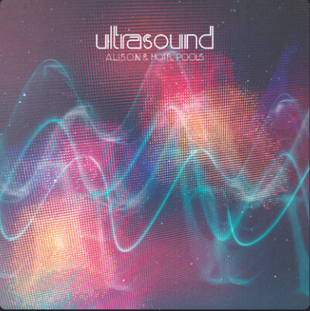
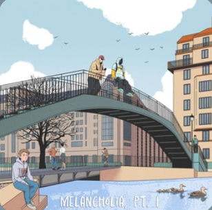

Lo-fi

Lo-fi (сокращение от low fidelity) — жанр музыки, характеризующийся намеренным использованием элементов, которые обычно считаются дефектами в звукозаписи, таких как шипение ленты, искажения и другие "несовершенства". Часто ассоциируется с расслабляющей, атмосферной музыкой, подходящей для учебы, работы или отдыха.
История Lo-fi
Истоки lo-fi можно проследить до 1950-х годов, когда музыканты начали экспериментировать с ограниченными возможностями записи. В 1990-х годах lo-fi хип-хоп стал популярным благодаря таким исполнителям, как DJ Shadow. Сегодня lo-fi часто используется в качестве фона для стримов и видео на YouTube.
Поджанры Lo-fi
- Chillhop
- Lo-fi hip-hop
- Downtempo
Известные Lo-fi исполнители
- A.L.I.S.O.N
- Downtown Binary
- Krosia
- Nohidea
- VIQ
Рекомендуемые альбомы

Lifted
A.L.I.S.O.N, hotel Pools

Melancholia, Pt. I
Dontcry, Nohidea